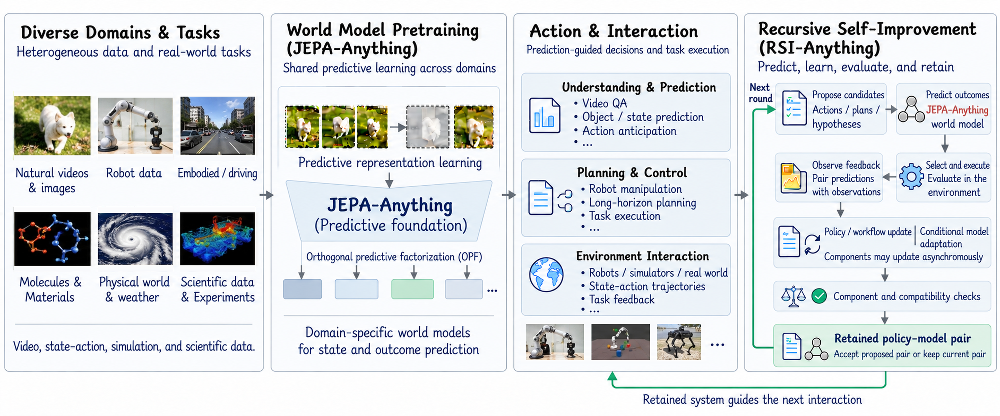
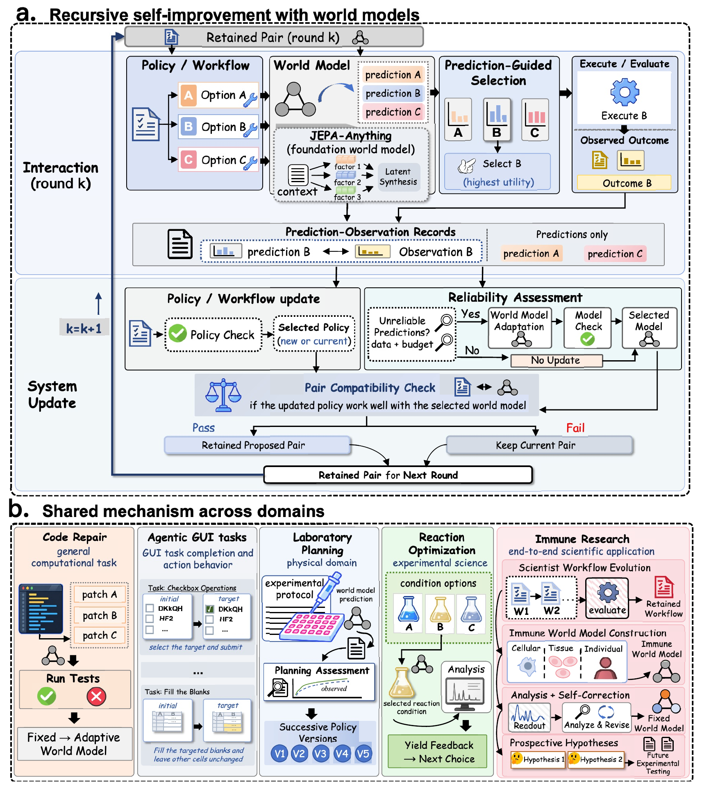
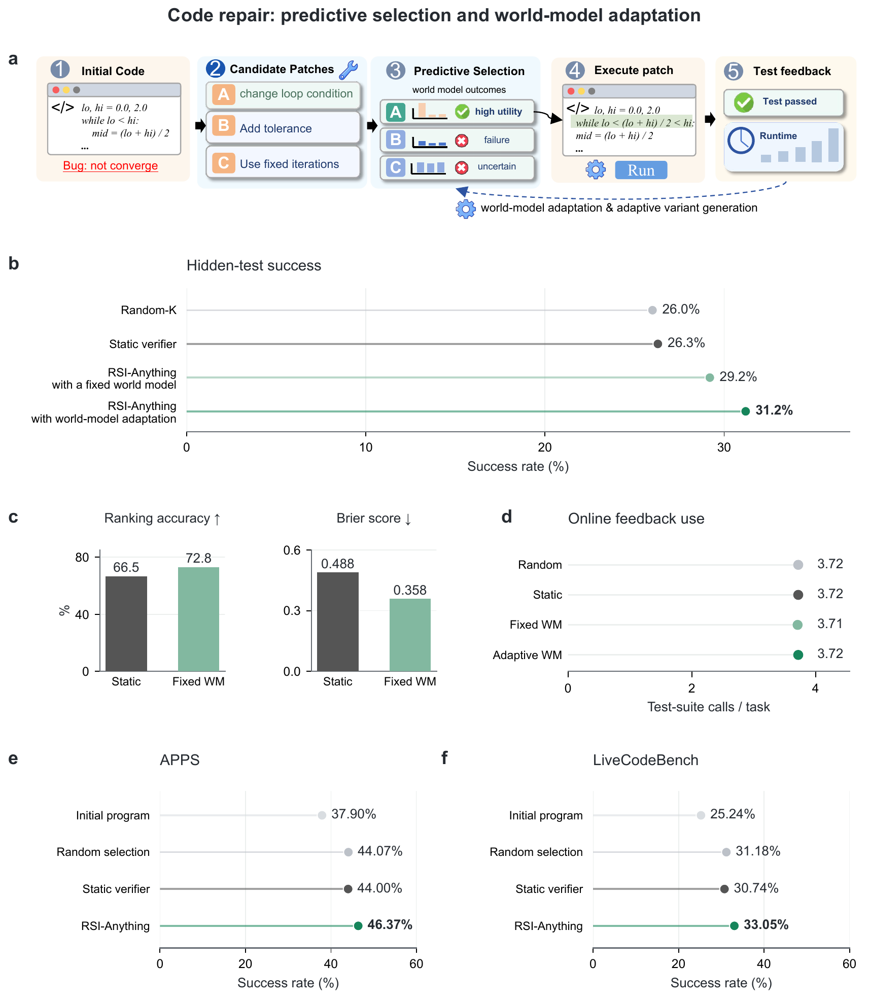
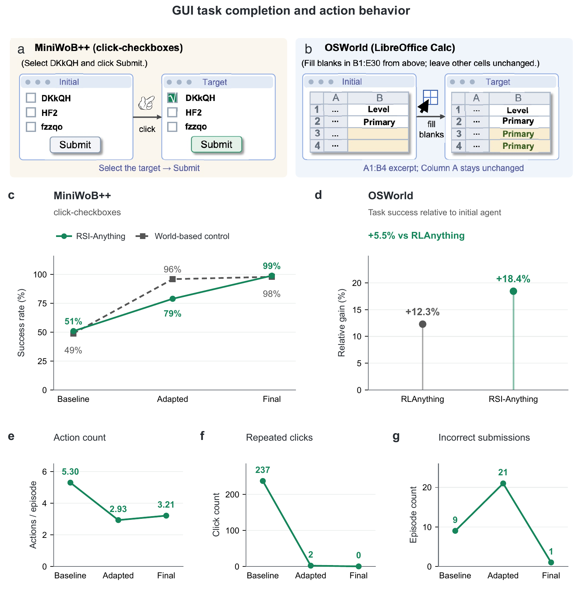
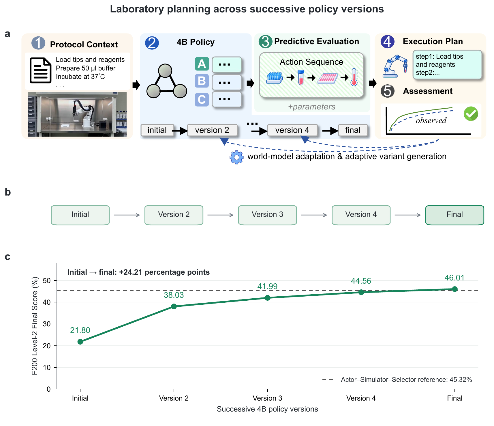
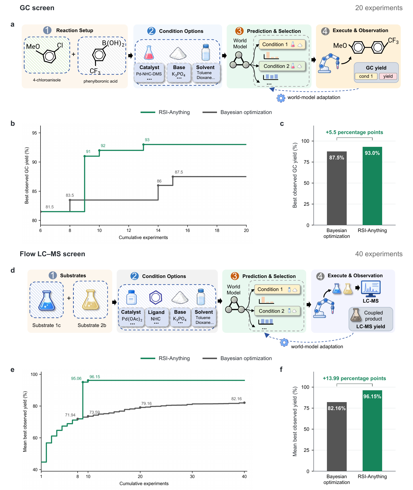
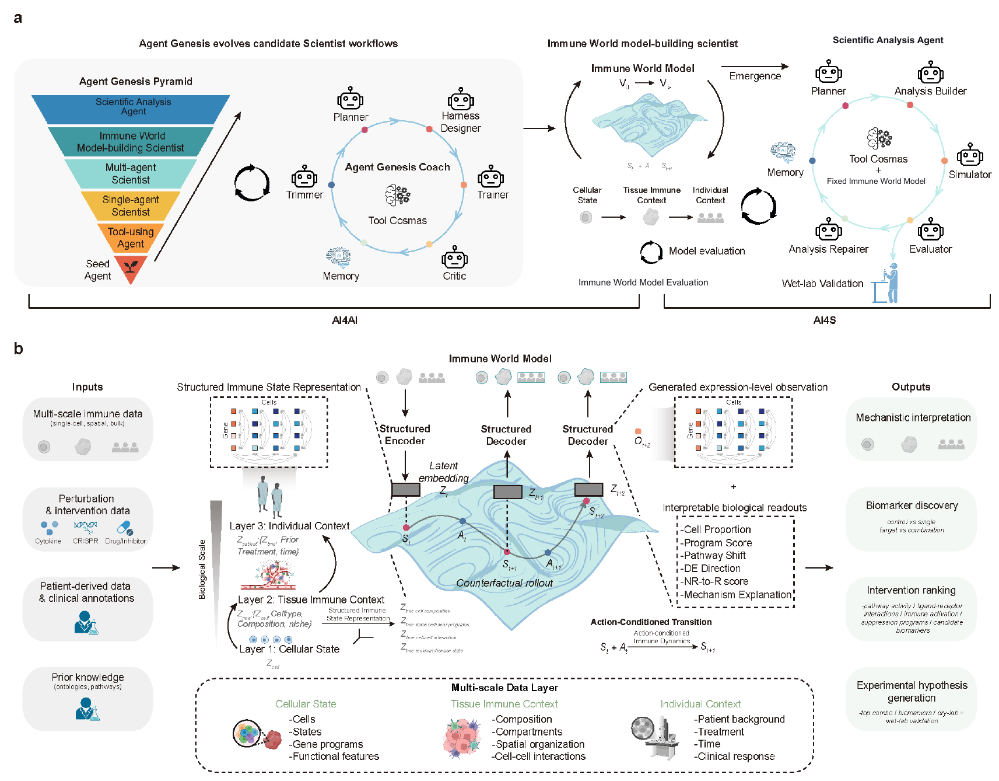

Based on arXiv:2610.13912v1. AI-assisted educational synthesis; no benchmark reproduction.
Original paper · Authors’ repository
Read each concise script aloud, then use the expanded explanation to resolve questions. The suggested 30-minute presentation combines speech, three short videos, interactive activities, figure inspection and transitions. The separate Q&A target is 10 minutes. Timing is an estimate, not a verbatim-duration guarantee; rehearse the route.
What must change before we call a system self-improving?
RSI turns experience into accepted, persistent changes to the system that acts next.
Start with a debugging assistant. It fails, reads the error, and tries again. Feedback is useful, but what has the assistant itself learned? RSI-Anything asks how experience can change the system used next time. Its central components are a policy that proposes actions and a world model that predicts consequences. The key is to retain accepted changes, so later decisions and learning depend on them. We will follow that loop, then check which experiments support each link. That distinction will guide every experiment we read.
Open with a familiar debugging story and ask what survives after the current attempt. Separate an error message, a revised program, and a revised assistant: they belong to different objects. The paper’s definition concerns the configuration making later decisions. Emphasize that a policy can be a persistent workflow, not only neural weights. Introduce the world model as a forecasting role rather than an all-knowing simulator. Explain how this lesson will judge the paper: first understand the protocol, then map each experiment to the pathway it actually enables, and finally discuss whether the evidence establishes sustained mutual improvement. Merely increasing the number of attempts is not sufficient evidence.
Imagine a repair assistant that fails a test, reads the error, and tries another patch. It has used feedback inside a task. Now imagine that it also improves its predictor or saves a better repair workflow, and uses that accepted version in later decisions. This second change is the persistent improvement studied here.
The paper places the unit of improvement at the policy–world-model pair. The policy generates or selects actions; the world model forecasts their consequences. Their interaction matters: a changed policy may ask the predictor about unfamiliar actions, and a changed predictor may reorder the policy’s choices. Better components therefore need to work well together.
The research question is practical: under limited external feedback, how can predictions help choose useful actions, how can observations support updates, and which updated versions should survive? The paper offers a protocol connecting prediction, execution, learning, and acceptance. Its experiments examine different parts of this protocol across computational and scientific domains.
Teaching example: saving “the last patch failed” extends the task record. Accepting a predictor that ranks future patches better changes the system. This is a conceptual example, not a reported benchmark run.
Which change is a system revision?
Answer: 2. The accepted predictor changes the decision system; the other actions change history or task state.
Why does another action not automatically create another system version?
t tracks interaction steps; k tracks update and acceptance cycles.
There are two clocks. One counts actions inside a task; the other counts decisions about system versions. Several tests can happen before one update decision, and that decision may retain the old pair. Meanwhile, objectives and evaluation rules stay fixed. This matters for code repair: changing the program is an action, while changing the coder is a policy update. Whenever we hear “improvement,” ask what changed and what will make the next decision.
Draw two timelines. Put three action markers on the first and one update decision on the second. Ask what object changes at each marker. A repaired program belongs to task state; the code-generating model belongs to policy configuration. This distinction becomes essential in the fixed-coder experiment. Explain that rejected versions still consume resources: failed experiments and adaptation attempts are not free. The paper fixes acceptance rules within a run to keep comparisons meaningful. A no-change decision is legitimate, and preserving a functioning current pair can be preferable to accepting an unsupported revision. Avoid saying that every completed cycle necessarily improves performance or creates a new model.
The task clock advances when an action is taken: a patch is executed, a box is clicked, or an outcome is measured. These events change the task state or available information. The update clock advances when the system decides whether to propose and retain a policy or predictor revision. One cycle may aggregate several task steps.
Within a run, objectives, interfaces, scoring criteria, constraints, acceptance rules, stopping rules, and total budget limits stay fixed. Task states, feedback records, remaining resources, and accepted component versions can change. Separating these categories prevents an apparent improvement obtained merely by changing the goal or making the evaluation easier.
A cycle may end with exactly the same policy and world model. An update pathway might be disabled, evidence might be insufficient, or a proposed revision might fail a check. The index k still advances because an update-and-acceptance decision has occurred. Cycle count therefore does not equal the number of successful retained revisions.
Teaching example: three test executions produce three records inside one cycle. A candidate predictor is then rejected. Cycle k+1 starts with the old pair and a longer history.
Can a cycle end without a new component version?
Answer: 1. A cycle records update and acceptance decisions, including retaining both current components.
If execution gives the answer, why build a predictor?
Forecasts can focus expensive evaluations, while executions supply observations.
Suppose we have four patches but can run only one expensive test. A world model helps decide which patch deserves it. If its ranking is useful, the same test budget can produce more successful repairs. But only the executed patch supplies an observation. Rejected patches remain unobserved, limiting reliability claims. We must also distinguish feedback cost from the computation needed for prediction, adaptation, and acceptance. Similar external usage is valuable, but it is one specific resource comparison.
Give the class four candidate patches and one test token before introducing equations. They can immediately see why selection matters. After running the chosen patch, ask what remains unknown. This reveals selective observation and prepares chapter nine’s three-state reliability assessment. Distinguish uncertainty from low utility: an uncertain candidate can be worth evaluating for information if an explicit acquisition rule enables that behavior. Also separate external interaction from internal computation. When the repair experiment later reports similar online test usage, say exactly what resource is similar. This supports a useful efficiency interpretation without making the broader, unsupported claim that every computational expense has been matched.
A system can propose more candidates than it can afford to evaluate. Four patches may be cheap to generate while running large test suites takes time. A laboratory can list many conditions while only a few evaluations fit its budget. A predictor offers a forecast that can prioritize which candidates receive external feedback.
This creates an opportunity and a risk. Better ranking can spend the same feedback budget more productively. Wrong predictions can repeatedly favor a narrow, misleading region. Because observations arrive mainly for selected actions, the system does not automatically learn how accurate it is on everything it rejected. Coverage becomes part of reliability.
The paper treats external feedback and update computation as separate resources. Similar test counts establish one kind of efficiency; they do not establish equal training cost or wall-clock time. A careful comparison names the matched resource, the measured outcome, and the extra computation used for prediction, adaptation, historical re-evaluation, and acceptance.
Teaching example: only one of four patches can be tested. Ranking B first may save an evaluation, but executing B reveals only B’s observed outcome. A, C, and D still have forecasts.
After only B is tested, which observations exist?
Answer: 2. Unexecuted candidates do not acquire observed outcomes.
How does JEPA-Anything provide a predictive foundation?
Encode the state, predict an action-conditioned latent target, and read out the needed consequence.
Read this pipeline as encode, predict, and read out. The encoder summarizes the state. The predictor asks what happens under a candidate action. The readout produces the consequence the task needs. JEPA-Anything supplies the representation-prediction foundation, including factor prediction and synthesis. RSI-Anything builds the improvement loop around it. Notice the interface: an outcome prediction is enough for ranking, but multistep planning also needs a way to propagate the next planning state. The predicted future remains a forecast until checked.
Read the equation with three verbs: encode, predict, read out. Explain that z is a learned representation, not necessarily a human-interpretable list of facts. The action enters through a domain adapter; these symbols describe roles rather than a compulsory wiring diagram. Similar notation across domains does not imply identical weights. Explain OPF only to the extent established in this paper and direct detailed architectural questions to JEPA-Anything. Finally, check whether the interface supplies an outcome alone or also a next planning state. That determines whether imagined multistep rollouts are supported. A conceptual diagram should not silently grant transition capabilities to every predictor.
JEPA-style prediction operates in a representation space. An encoder turns the current state and domain context into a latent description. A predictor uses that description and a candidate action to forecast a target representation. A readout converts it into a usable consequence, such as execution-result probabilities or a distribution over reaction yield.
RSI-Anything inherits JEPA-Anything’s model-construction foundation. Orthogonal predictive factorization organizes latent targets into complementary factors, learns dedicated predictors, and synthesizes a complete latent state. This is predictive infrastructure. The recursive contribution studied here concerns how predictions and observed feedback are connected to updates and acceptance around the instantiated domain model.
Point and probabilistic readouts are alternative interfaces. One-step ranking only requires an outcome prediction. Multistep planning additionally requires an adapter that propagates a planning state. A yield predictor returning a scalar or distribution is therefore not automatically a simulator capable of rolling out every intermediate physical state or handling arbitrary actions.
zₜ = Eφ(sₜ,c_d); ẑₜ₊₁ = Fφ(zₜ,aₜ,c_d); ôₜ₊₁ = Rφ(ẑₜ₊₁,c_d)
This is the point-readout route from Equations 2–4. Equation 5 instead returns p(o | s,a,c). The domain defines utility conversion and comparison with observations.

The opening overview places a shared predictive design underneath domain-specific tasks and a feedback loop above them. This is a conceptual map, rather than a result plot.
Teaching analogy: summarize the program state, forecast behavior under a patch, then read out likely test outcomes. A learned representation is not a mathematical guarantee that the patch is correct.
What extra capability supports multistep planning?
Answer: 2. An outcome-only predictor may rank actions without supplying future states.
Where does feedback enter, and when does a new version become official?
Six operations connect today’s decision to the system making tomorrow’s decisions.
Here is our route map. Propose candidates, predict consequences, select within budget, and obtain feedback. Use that feedback to propose updates and decide what to retain. Two boundaries matter: evaluation turns a forecasted outcome into an observation, and acceptance turns a candidate update into the official version. Policy and model can change on different schedules. Follow the return arrow: the retained pair determines what the system proposes, selects, and learns about in the next cycle.
Use the framework figure as a map for the next five chapters. Name each operation and pause between observed feedback and candidate updates. If only B ran, ask where A’s observation is stored: it is not, because no observation exists. Explain asynchronous updates: one component can stay fixed while the other changes. Show the component checks and pair check separately. Give their purpose now and leave the fallback details for chapter ten. Trace the return arrow carefully: accepted revisions change the next actual interaction, not merely the report of the previous attempt. The six operations are a shared protocol; individual domain experiments enable different pathways.
Start with an accepted policy–model pair and the task state. The policy proposes candidate actions. The model predicts consequences, while validity checks and operational constraints exclude infeasible options. A selection rule allocates the remaining feedback budget to a feasible candidate or batch. These operations decide what the system will obtain new evidence about.
Execute or evaluate the selected action and store its observation beside the prediction that motivated selection. Feedback can construct a policy or workflow revision and support a conditional predictor-adaptation attempt. These are candidate versions. Finishing an update procedure or reducing a training loss does not automatically make them the system used next.
Component checks compare proposed components with current versions. A compatibility check evaluates their assembled pair under declared conditions. An accepted pair enters the next cycle; a rejected pair leaves the previous pair in place. Retained revisions influence later proposals, rankings, feedback, and learning. This dependency closes the recursive mechanism.

The central framework separates choosing an action, deciding whether to attempt an update, and accepting a proposed system version. Its domain panel shows different bindings of this common contract.
Play the narrated animation · SRT
Follow synthetic patch B through the figure: proposed → forecast → selected → tested → used to propose an update → accepted or rejected. Then trace the return arrow into the next cycle.
When does a candidate predictor become retained?
Answer: 3. Construction and retention are different stages.
How do predicted consequences become a selection decision?
Exclude invalid candidates, apply the declared ranking rule, then check feedback cost.
Selection has three questions. Is the candidate valid? How useful does it look under the declared rule? Can we afford its evaluation? Our toy score subtracts an optional uncertainty penalty, so changing that weight can change the ranking. The paper’s code ranker uses predicted execution probabilities instead. Also remember that uncertain does not mean worthless: an information-seeking rule may test an uncertain action, even when its imagined trajectory should not be admitted for training.
Run the candidate-selection demonstration in two passes. First remove an invalid high-scoring option to establish that constraints are not merely soft preferences. Then vary the uncertainty weight and calculate one score aloud. Stress that this arithmetic is a teaching instantiation, while the reported code ranker aggregates execution-class probabilities. Ask why the most uncertain candidate might still deserve a real test. The answer depends on whether an information-seeking acquisition rule is enabled. This prepares the crucial distinction between learning about a candidate and learning from its imagined trajectory. Do not imply that all uncertainty estimators are calibrated or that every application uses a penalty.
The policy produces a candidate set from the current state and goal. Each candidate receives an outcome forecast or, if supported, a bounded rollout. The verifier records validity, utility components, provenance, and any available uncertainty. Feasibility is checked before utility ranking: a promising forecast cannot override an invalid action or an operational constraint.
For the framework’s utility-based route, weighted utility components are added and an optional uncertainty penalty is subtracted. The weights, uncertainty estimator, penalty strength, batch size, and feedback costs are domain choices. The code experiment uses its own instantiated rule: it aggregates execution-class probabilities to rank four revisions before selecting one to execute.
Selecting the highest utility and selecting the most informative uncertain action are different objectives. An explicitly enabled acquisition rule may prioritize uncertainty for evaluation. The imagined-training admission filter is another decision again. A candidate can be useful to test precisely because it is uncertain, while still being unsuitable as an unverified training target.
R_d(τ̂) = Σⱼ w_d,j r_τ,j − Δ_d(τ̂); Δ_d = λ_d U(u_τ) when enabled, otherwise 0
Invalid candidates are removed before this score is used. If the penalty pathway is disabled, Δ=0. A declared acquisition rule can replace utility ranking; the framework does not force this formula on every domain.
Play the narrated animation · SRT
Synthetic arithmetic: utility 0.80, uncertainty 0.50, penalty weight 0.20 give score 0.80−0.20×0.50=0.70. A candidate with score 0.95 but failed validity is excluded. These numbers illustrate Equation 7, not the code benchmark’s exact ranker.
A candidate fails validity but has the highest utility. What happens?
Answer: 2. Validity and operational constraints determine executable candidates before utility-based selection.
When may an imagined trajectory enter training?
Evidence provenance describes origin; explicit admission criteria decide sufficiency.
Predictions are not observations. Keep them in separate fields, linked to the same action, context, and system version. Evidence labels E0 to E3 tell us where information came from, not whether it automatically qualifies for training. Imagined trajectories need their own admission checks: validity, utility, permitted evidence, and uncertainty when enabled. Failing training admission does not necessarily prevent a real evaluation. If imagined learning is disabled, the simulated training set simply stays empty. Keep that distinction visible in every animation.
Make a two-column record on screen: prediction and observation. Put a timestamp, source, and version identifier underneath. This simple display often explains the evidence contract more clearly than the indicator formula. Introduce E0 through E3 as source categories, then explain why provenance alone cannot establish correctness or suitability. Walk through one rejected imagined trajectory, showing that any failed factor makes its admission indicator zero. If the uncertainty check is omitted its factor is one, rather than pretending uncertainty has been measured. The paper specifies this general filter but does not claim that every domain trains on imagined trajectories. Preserve that optionality throughout the lesson.
The framework distinguishes four origins: deterministic rule checks E0, learned predictions and rollouts E1, specialized simulators or higher-fidelity calculations E2, and external measurements or experiments E3. These labels record provenance and intended fidelity. They do not make every E3 measurement correct or every E1 forecast suitable for learning.
An imagined trajectory enters a simulated learning set only when the application enables that route and its declared filters pass. These include validity, a utility threshold, an uncertainty check when enabled, and a permitted evidence source. Curating the accepted trajectories is separate from selecting real actions. If imagined learning is disabled, this set is empty.
A feedback record should preserve the input context, action, original prediction, observed result, evidence source, and generating system version. Replacing a prediction with the observed answer would erase the information needed to evaluate prediction error. Linking both fields instead allows the same experience to support action evaluation, reliability assessment, and appropriately targeted updates.
e_τ = 1[v_τ=1] × 1[R_d(τ̂)≥r_d,min] × C_dᵁ(τ̂) × 1[ℓ_τ∈E_d,train]
All factors must pass. Cᵁ=1 when that check is omitted. D_sim is curated from admitted trajectories only when imagined learning is enabled.
Teaching example: a rollout passes rules and predicts high utility but exceeds the allowed uncertainty. It is rejected as imagined training data. The system may still choose to evaluate it externally if its declared evaluation rule permits.
Does E3 provenance automatically permit training?
Answer: 2. Provenance identifies origin; sufficiency is a separate assessment.
§2.3 · Evidence and imagined training data · Equation 8
What does a policy update change?
Feedback must become an appropriate learning signal for the object that is allowed to change.
A policy update can change neural parameters, but it can also change a persistent workflow. Feedback must be converted into a suitable signal: a demonstration, a preference, or a workflow score. Policy data and predictor-adaptation data need not be the same because they optimize different things. An enabled attempt produces a candidate θ′. Acceptance comes later. In a fixed-policy experiment, the update indicator is zero, even though the task state and generated candidates continue to change.
Use the workflow example to prevent the audience equating every update with expensive fine-tuning. Ask what configuration persists into later tasks. Then distinguish the target of the two data sets: policy learning asks which behavior should be preferred; predictor adaptation asks what outcome should have been forecast. The same interaction can support both, but their filtering and labels need not be identical. Explain the prime on θ′ as “candidate,” not “next accepted version.” The fixed-policy route is a legitimate instantiation with uπ=0. This will stop the class from incorrectly describing code repair as training the coder just because the repaired program changes across rounds.
The symbol θ can denote trainable parameters or a persistent agent workflow. A policy revision changes how candidates are generated or selected. Possible routes include demonstrations, preferences based on evaluated alternatives, and workflow search using evaluation scores. The application declares which route is enabled and which parameters or configuration fields may change.
Feedback used for policy improvement forms D_policy. Predictor adaptation uses D_adapt, which can contain different records because its target is prediction quality rather than action behavior. Imagined trajectories may supplement policy data only if that learning pathway is enabled and its admission checks have passed. One generic “feedback dataset” can hide these different objectives.
A policy-update attempt also needs a declared schedule or trigger, appropriate evidence, and enough budget. If no attempt is enabled, θ stays unchanged. When an attempt is enabled, the result is θ′, a proposed configuration. It still needs component acceptance and compatibility evaluation before becoming the retained policy for subsequent interaction.
θ′ₖ₊₁ = Update(θₖ,D_policy,k,D_sim,k) if uₖπ=1; otherwise θₖ
The attempt flag includes the declared trigger, sufficient evidence, and budget. Imagined data may be empty. This constructs a candidate; it does not decide retention.
Teaching example: feedback favors “inspect the failed assertion before proposing a patch.” Saving this as a validated workflow can revise θ even if no language-model weights change. This illustrates the framework, not a specific reported code update; the paper’s coder is fixed.
Can θ change without updating neural weights?
Answer: 1. The framework allows trainable parameters or persistent workflow configurations as the policy object.
§2.4 · Policy learning or workflow revision · Equation 9
Why is “insufficient evidence” different from “reliable”?
The adaptation trigger requires unreliability, sufficient adaptation data, and budget together.
The reliability verdict has three states. Reliable means the declared checks pass over covered candidates. Unreliable can justify adaptation. Insufficient means we lack enough coverage; it is not a certificate of reliability and it does not activate this trigger. An attempt additionally requires enough suitable data and budget. Use predictions attributable to the current model version when judging it. Even when all conditions pass, adaptation only proposes a new predictor. Retention is a separate decision.
Demonstrate all three reliability states rather than reducing the check to a red/green switch. Start with insufficient coverage and show that adaptation remains off, even if budget is abundant. Next use an unreliable verdict but insufficient adaptation data. Finally satisfy all conditions. Explain the version rule using an old predictor and a revised one: old stored predictions can explain past decisions, but current reliability needs current-version predictions. The data threshold, loss, and trainable subset are application specifications, so the toy interface must label its settings synthetic. A triggered attempt does not guarantee improvement; the candidate predictor still faces component and compatibility checks.
Reliability is assessed for the current predictor version and the relevant candidate range. Historical records must use predictions attributable to that version: either predictions already made by it or new predictions on stored inputs. Mixing old-version prediction errors directly into the current-version estimate would confuse past decision quality with present predictor quality.
The assessment has three outcomes: reliable, unreliable, or insufficient. Selected actions provide limited coverage, so a small error on a narrow observed subset is not evidence of broad reliability. Insufficient coverage yields “insufficient.” Under the formal trigger, this does not activate adaptation. Subsequent selection still follows the declared evaluation rule and remaining budget.
An adaptation attempt occurs only when reliability is classified as unreliable, the adaptation dataset is sufficient, and the available update budget covers estimated cost. The application specifies targets, predictive loss, and trainable parameters. A scalar yield supplies an outcome target, not a fully observed next state, though its loss may update trainable upstream parameters.
uₖᵂ = 1[ρₖᵂ=unreliable] × 1[D_adapt,k sufficient] × 1[B_update,k≥ĉ_adapt,k]
The reliability assessment can also return reliable or insufficient; both leave this attempt flag at zero. A disabled adaptation pathway also sets uᵂ=0.
Synthetic gate: unreliable + 12 usable records + enough budget may enable an attempt under a teaching rule. Changing the verdict to insufficient turns the attempt off. The number 12 is illustrative; the paper does not specify a universal minimum.
Coverage is insufficient, but data and budget look plentiful. Does Equation 11 trigger?
Answer: 2. Insufficient is a distinct state and does not satisfy the unreliability indicator.
Why check compatibility after checking each component?
Accept revisions at the level of the assembled decision system, with explicit fallback rules.
A component can improve in isolation yet damage joint behavior. The new policy might propose unfamiliar actions; the new model might rank them poorly. Component checks first decide which proposed versions enter the candidate pair. The pair check then compares that assembled system with the current pair. If it fails, the whole old pair stays. If neither component changes, no new pair comparison is needed. Keep update data, gate data, and final audit data conceptually separate. Acceptance criteria must be declared before inspecting the outcome.
Work through two cases on the diagram. In the first, the policy component fails but the model passes: the assembled pair is old policy plus proposed model, and that pair must pass compatibility. In the second, both components pass but their pair fails: Equation 18 retains the entire old pair. Do not invent an automatic search through every possible mixture after pair failure. Explain why improving average prediction error is insufficient if error concentrates on candidates favored by the new policy. Then distinguish training, gate selection, and held-out reporting. These roles control what each performance number can legitimately establish and help students recognize repeated-selection bias.
A policy component check measures its declared task utility and constraints against the current policy. A model component check measures relevant predictive quality against the current model. Passed, attempted components enter an assembled candidate pair; a failed or unattempted component contributes its old version. This determines exactly which pair will face compatibility evaluation.
The pair check addresses interaction: a policy can propose unfamiliar candidates, and a predictor can alter selection or learning signals. Evaluate the assembled system against the current pair under prescribed matched conditions. Matched task conditions do not require identical generated candidates. The check concerns joint decision behavior and prediction suitability on the selected policy’s candidate range.
If the pair check fails, the entire old pair is retained. If neither component changes, the current pair carries forward without a new pair comparison. Update data construct candidates; gate data choose retained versions; a designated held-out audit set supports final reporting. Reusing a gate for many choices can still motivate an independent final audit.
(θₖ₊₁,φ_d,k+1) = (θ̄ₖ₊₁,φ̄_d,k+1) if G_pair=1; otherwise (θₖ,φ_d,k)
Bars identify the candidate components after component checks. Each attempted component enters only if its own gate passes; otherwise its current version is used. Equation 18 then makes the pair-level decision.
Play the narrated animation · SRT
Synthetic example: a new predictor lowers average error, but ranks patches from the new policy poorly. Both may pass separate checks, yet fail the pair check. The retained system is the old pair, not an untested mixture chosen after failure.
Both proposed components pass, but their pair fails. What is retained?
Answer: 2. Equation 18 falls back to the entire current pair when pair acceptance fails.
What does this comparison isolate?
A shared coder and candidate budget separate the value of selection from the value of predictor adaptation.
Code repair gives us a relatively controlled comparison. The same fixed coder proposes four revisions, then a selector chooses one to execute. Online tests guide repair; hidden tests measure final success. Compare a static verifier, a fixed predictor, and an adapted predictor. One implementation detail matters: the official reproduction guide trains adaptation on recorded transitions, and final evaluation does not run optimizer updates. Our small interactive loop explains the protocol, rather than reproducing that benchmark training procedure.
Begin by circling the fixed coder label. Students often hear “repair improves” and assume the code generator was trained. Here the program changes, but the coder remains fixed. Explain the four-candidate, one-execution protocol and the separation of online and hidden tests. Then explicitly distinguish the paper’s general adaptation pathway from the released reproduction procedure: recorded-transition training produces the adapted checkpoint, and final evaluation does not optimize it online. This is a repository-backed detail, not a newly inferred experimental result. The synthetic laboratory may visualize an update within a cycle for teaching, but must not be described as a timing-faithful reproduction of those benchmark episodes.
The policy is ReasonFlux-Coder-7B and remains fixed. In each repair round it proposes four revisions, and one is chosen for execution. W1, a 3B execution-outcome predictor adapted from Qwen2.5-Coder-3B-Instruct with LoRA and the JEPA-Anything design, returns five-class probabilities for each candidate–test pair. These probabilities are aggregated to rank revisions.
The core comparison uses 200 CodeContests tasks, three seeds, and at most three feedback rounds. Random selection, a capacity-matched static verifier, a fixed world model, and a feedback-adapted world model share the coder and candidate budget. Online tests provide repair feedback; hidden tests determine final all-pass success. These are different evaluation roles.
The official repository adds an important implementation detail beyond the paper’s high-level feedback loop. Its reproduction guide documents a four-stage adaptation training chain on recorded transitions. The final benchmark evaluation performs no optimizer updates. Comparing fixed and adapted checkpoints therefore does not mean that the released final evaluation performs online gradient descent during each of the 600 episodes.
The classroom repair laboratory illustrates prediction, feedback, conditional adaptation, and retention with small synthetic examples. It does not load ReasonFlux, W1, or the benchmark checkpoints, and it is not a literal replay of the released training chain. Its purpose is to reveal decision logic while keeping reported research results in a separate evidence panel.

The code study keeps the code-generating policy fixed, making it useful for separating predictive candidate selection from further improvement of the predictor.
Paper v1 · Figure 3 · PDF p.12
Teaching example: the same generator offers A–D to two selectors. If their choices differ, this can demonstrate a selector effect. If their generators also differ, candidate quality becomes another possible explanation.
Which object is fixed in the central repair comparison?
Answer: 2. Programs and feedback evolve, but the coder is held fixed while selection and predictor settings are compared.
§3.1 · §6.1 · Table 4; repository reproduction guide
Do better forecasts translate into more successful repairs?
The results show successive gains from predictive selection and predictor adaptation at similar online test usage.
Read these as two successive comparisons. Predictive selection raises hidden success from 26.3 to 29.2%, and predictor adaptation reaches 31.2%, with similar online test usage. Better ranking and lower Brier error are reported for the fixed model versus the static verifier. The exact paired gain is 2.83 percentage points, with its reported interval; rounded table subtraction gives 2.9. These results support selection and adaptation, while the fixed coder limits claims about joint policy–model improvement.
Read the table in two comparisons. First compare static verifier with fixed world model; then compare fixed with adapted world model. Keep the fixed coder and candidate budget visible. Explain why hidden success, ranking accuracy, and Brier score answer different questions. Identify precisely which systems have reported predictive diagnostics. When discussing uncertainty, use the paper’s paired estimate and interval rather than creating an interval for the adaptive gain. Tasks recur across seeds, so the paper uses task-level resampling for clustered inference. Finally separate matched online test use from total computational cost. We have transcribed the results and inspected the evidence; we have not independently run these models or re-estimated their statistics.
Table 2 reports hidden all-pass rates of 26.0% for Random-K, 26.3% for the static verifier, 29.2% for the fixed world model, and 31.2% for the adapted world model. Their mean online suite calls per task are 3.72, 3.72, 3.71, and 3.72. The comparison concerns similar external test usage, not identical overall computation.
For the fixed-world-model versus static-verifier comparison, ranking accuracy increases from 66.5% to 72.8% and five-class Brier score falls from 0.488 to 0.358. Ranking accuracy asks whether candidates are ordered well. Brier score measures probabilistic prediction error. These diagnostics connect forecasting quality with final repair success, but are different metrics.
The paper gives a paired gain of +2.83 percentage points for fixed world model versus static verifier, with a 95% interval of [+0.17,+5.50]. Subtracting rounded displayed rates gives 2.9 points; that rounded subtraction is not the same numerical quantity as the reported paired estimate. An adaptive-model Brier score is not supplied in Figure 3c.
Additional evaluations report 46.37% on APPS Introductory and 33.05% on LiveCodeBench v6 for JEPA-Anything-guided selection, averaged across three seeds. These extend evidence about selection across coding benchmarks. They do not establish that both policy and predictor continuously improve together, because the coder remains fixed in these reported comparisons.
Brier = (1/N) Σᵢ₌₁ᴺ Σ_c₌₁⁵ (pᵢc − yᵢc)²
This is the standard explanatory definition of the five-class Brier metric, not a numbered equation introduced by the paper. Lower is better. The site does not recompute the reported values.
Metric illustration: forecasting five classes as probabilities incurs Brier loss against the observed one-hot class. A confident wrong forecast is penalized more than a mildly uncertain wrong one. This illustrates the standard metric, not a recomputation of the paper’s results.
What does similar online suite usage establish?
Answer: 2. Prediction, adaptation, and acceptance computation are additional resource dimensions.
Do fewer actions always mean a better agent?
Task completion and error diagnostics must be read together; controller attribution needs implementation context.
The checkbox task shows why action count is not enough. The middle configuration takes only 2.93 actions but has more incorrect submissions; the final one takes 3.21 and reaches 99% success. The repository says this selected controller follows policy ranking, so 99% does not isolate world-model ranking. On OSWorld, the gains are relative percentages. An 18.4% relative gain multiplies the baseline by 1.184; it does not add 18.4 percentage points.
Ask students to choose between the middle and final checkbox configurations using actions alone, then reveal the incorrect submissions. This makes multi-metric evaluation concrete. Clarify that diagnostics are not interchangeable: repeated clicks, incorrect episodes, and task success count different things. Introduce the official repository controller detail as additional implementation evidence. It narrows attribution without erasing the reported performance. Explain alpha=0 in plain language as following policy ranking; no internal blending derivation is needed. For OSWorld, calculate one hypothetical relative gain and label the starting value synthetic. Never convert +18.4% into +18.4 percentage points or invent an absolute success endpoint. Ask students to name the comparator before interpreting any gain.
On MiniWoB++ click-checkboxes, the reported RSI-Anything configurations reach 51%, 79%, and 99% success. Average actions change from 5.30 to 2.93 to 3.21. The middle configuration uses the fewest actions but has 21 incorrect-submission episodes, compared with 9 initially and 1 finally. Minimizing actions alone would select the wrong trade-off.
Repeated clicks fall from 237 initially to 0 finally. The final configuration combines high success with fewer actions than baseline and fewer submission errors. The paper reports policy and world-model updates through interaction feedback. It also reports a world-based control with success of 49%, 96%, and 98% across the corresponding configurations.
The official GUI results guide adds an attribution caveat: the development-selected controller uses alpha=0 and follows policy ranking, while pure world-based control ranks the same policy candidates by world-model values. The 99% endpoint therefore does not isolate a causal contribution from world-model ranking. Framework-level descriptions and this particular selected controller should be distinguished.
OSWorld uses relative improvement: RSI-Anything is +18.4% versus the initial agent and +5.5% versus RLAnything; RLAnything is +12.3% versus the initial agent. These are relative percentages, not percentage points. The absolute initial success rate is not supplied here, so the absolute endpoint cannot be recovered from these figures alone.
Relative gain = 100 × (s_method / s_reference − 1)%
A percentage-point difference instead subtracts success rates expressed in percent. These answer different questions.

The GUI figure combines two environments and several diagnostics. Relative improvements on OSWorld use a different unit from the percentage-point changes between MiniWoB++ success rates.
Paper v1 · Figure 4 · PDF p.14
Synthetic unit example: if initial success were 40%, an 18.4% relative improvement would be 40%×1.184=47.36%, a 7.36-percentage-point gain. The 40% starting value is invented for teaching, not the OSWorld baseline.
Does +18.4% relative improvement mean +18.4 percentage points?
Answer: 2. An absolute baseline is needed to compute the percentage-point difference.
§3.2 · Figure 4 · §6.1; official GUI RESULTS.md
What does the laboratory progression demonstrate?
Successive retained policies improve protocol-aligned planning; physical execution is a separate evaluation.
The lab result follows five versions of one 4B policy on the same 200-task planning benchmark. Final Score rises from 21.80 to 46.01%, a 24.21-point gain. The final score is 0.69 points above the reference, without a supplied interval for that difference. Remember the metric: it combines action-sequence and parameter alignment. This supports successive planning improvement, while real equipment execution and sustained joint policy–model improvement require further evidence. Planning alignment and execution success answer different questions.
Read the five points as versions of one policy, not five independent model families. State the benchmark and metric before quoting the improvement. Ask what Final Score measures and what observation would be needed to establish physical execution. Explain the diminishing increments without inferring a general learning law from only five selected points. The 4B label describes the planning policy, while the reference is a multi-component Actor–Simulator–Selector system; avoid turning that into an unsupported total-cost ratio. Finally, distinguish the 24.21-point within-process progression from the 0.69-point reference comparison. They answer different questions and have different evidence strength. Ask students to name the comparator before interpreting any gain.
LabHorizon examines laboratory planning under reagent, instrument, and ordering constraints. Level 1 measures visually grounded next-action accuracy. Level 2 measures protocol-aligned action sequences, with a Final Score combining action-sequence similarity and parameter accuracy. The reported F200 setting contains 200 tasks. This score is not a rate of successful physical experiments.
The paper follows five consecutive versions of the same 4B policy in one development sequence. Their Level-2 scores are 21.80%, 38.03%, 41.99%, 44.56%, and 46.01%. The final-minus-initial difference is 24.21 percentage points. The plot’s horizontal spacing is schematic development order, not elapsed training time or equal update cost.
The final version scores 46.01% versus 45.32% for the Actor–Simulator–Selector reference, a difference of 0.69 percentage points. Level-1 accuracy is 0.700 versus 0.665. These are reported benchmark means; the paper supplies no uncertainty interval establishing statistical significance for that 0.69-point difference. Model size alone also does not determine total system cost.
This experiment provides evidence for successive retained policy improvement in planning. It does not by itself establish continuous reciprocal improvement of policy and world model. The framework diagram includes broader update routes, while the quantitative series follows policy versions. Reliable execution on real equipment, with its interfaces and failure modes, remains an additional validation requirement.

This figure follows five versions of one 4B policy in development order on the same 200-task F200 Level-2 benchmark. The score measures plan alignment, not successful robot execution.
Paper v1 · Figure 5 · PDF p.15
Teaching example: a plan may list the right steps but use an incorrect duration or reagent amount. A score combining sequence and parameter quality can reflect both. It still cannot prove that a robot executed the plan safely or successfully.
What does 46.01% describe?
Answer: 2. Final Score combines sequence similarity and parameter accuracy.
How much can feedback-guided search achieve within a fixed observation budget?
Two separate measured-yield screens support budgeted selection; the released flow evaluation is frozen-model pool replay.
There are two chemistry screens. At twenty observations, the GC screen reaches 93.0 versus 87.5%. At forty, the separate flow screen reaches 96.15 versus 82.16%. Both measure best-so-far yield. The released flow evaluation replays a fixed pool of measured conditions with frozen predictions; feedback changes the next selection. This supports budgeted sequential search, while it does not show a new physical experiment or neural weight update at every step of that released loop.
Start by separating the two screens on the page. Read each endpoint together with its method and budget. Explain a running maximum using three invented yields, because monotonic curves can otherwise look like guaranteed improvement at every step. Then introduce the repository-backed implementation scope: 321 measured candidates, eight initial observations inside forty, one hundred runs, frozen predictions, and history-dependent expected-improvement selection. Feedback can change decisions without changing model weights. These details prevent conflating replay with a continuously adapting physical laboratory. The paper’s broad selection contract remains useful, while the released evaluation supports a narrower, precisely describable empirical claim. Ask students to name the comparator before interpreting any gain.
The paper studies two Suzuki–Miyaura screens, comparing RSI-Anything with Bayesian optimization inside each protocol. In the GC-analyzed Pd–NHC–DMS screen, the best observed yield after 20 evaluations is 93.0% versus 87.5%, a 5.5-percentage-point difference. This is one screen with its own reaction, choices, and measurement method.
In the separate flow LC–MS screen using Pd(OAc)2, mean best observed yield after 40 evaluations is 96.15% versus 82.16%, a 13.99-point difference. Do not splice the two screens into a single trajectory or average their endpoints. “Best observed” is a running maximum, so its curve cannot decrease even when the newest observation is worse.
The official reaction-optimization guide describes the released flow evaluation as sequential replay over a fixed pool of 321 measured conditions, with 100 runs and eight initial observations included within the total budget of 40. Predictions remain frozen. Feedback changes expected-improvement selection and removes already observed candidates rather than updating neural weights at every observation.
This implementation detail narrows the claim: it is a reproducible feedback-guided selection experiment over measured data. It is not evidence that the released inference loop performs a fresh wet-lab experiment after every choice. More general physical deployment or transfer to different chemistry would need evaluation beyond the reported pools, protocols, and budgets.

The two halves concern separate Suzuki–Miyaura screening protocols. Each endpoint compares methods at the same observation count within its own screen.
Paper v1 · Figure 6 · PDF p.17
Teaching example: yields 40, 80, 55 give best-so-far values 40, 80, 80. The flat final segment does not mean the third condition achieved 80; it means the best previously observed condition remains 80.
Why can a best-so-far curve stay flat after a poor observation?
Answer: 2. The running maximum records the best value seen, not the latest yield.
§3.4 · Figure 6 · §6.1; official reaction guide
Which parts improve, and which predictor stays frozen?
Workflow evolution constructs a model; downstream self-correcting analysis uses its fixed parameters.
Separate construction from analysis. First, workflow search selects and retains a model-building workflow that produces the immune world model. Then an analysis agent uses that model with frozen parameters, revising interventions and hypotheses through evidence and self-correction. The final SIRPα and IL-36γ combination is a prospective nomination for testing. It is a useful concrete output, while the evidence does not establish a validated therapy or continual predictor retraining during downstream analysis.
Draw a vertical boundary between construction and downstream analysis. On the left, a retained model-building workflow produces the immune predictor. On the right, candidate interventions and hypotheses change while the predictor is frozen. Ask which object each arrow modifies. Explain the three biological scales as input and prediction contexts, without implying a fully mechanistic simulator of every immune process. Read the therapeutic endpoint using prospective language. The paper cites a separate immune-world-model study for detailed development and evaluation. Our lesson summarizes this application’s role in RSI-Anything; it neither independently validates that model nor turns the nomination into a treatment recommendation.
The construction stage uses Agent Genesis to search scientific-agent workflows and model configurations. The selected model-building workflow is retained and produces an action-conditioned immune world model. This establishes a persistent workflow and a resulting predictor. It should be distinguished from the later analysis stage, which uses the constructed model rather than continually retraining it.
The model represents cellular states, tissue immune context, and individual context. Explicit actions include cytokines, genetic perturbations, or candidate therapies. Its readouts support forecasting and interpretation across these scales. Measured perturbation evidence supports development; withheld interventions and biological contexts assess forecasting and action composition. These are predictive evaluations, not direct proof of therapeutic benefit.
During downstream analysis, world-model parameters are frozen while analysis state, candidate interventions, tool use, and hypothesis ranking can evolve. The analysis agent coordinates inference, evaluation, and self-correction. Revising a hypothesis is therefore not the same as adapting the underlying world model. The stage distinction is essential when mapping this application onto the general framework.
The paper reports that self-correction removed screened cytokine-pair candidates, and integrated evidence led to a prospective nomination combining SIRPα inhibition with IL-36γ-axis modulation. This is a concrete hypothesis for subsequent experimental testing. Its appearance at the end of an end-to-end workflow does not establish validated efficacy, clinical suitability, or completed therapeutic experimentation.

The application joins scientific-workflow evolution, immune-world-model construction and downstream analysis. Its final therapeutic combination is a hypothesis awaiting experimental validation.
Paper v1 · Figure 7 · PDF p.18
Teaching distinction: deleting a poorly supported candidate from the hypothesis list changes analysis state. Updating model weights to better predict a held-out intervention would change the predictor. The reported downstream analysis does the former while keeping predictor parameters fixed.
What stays fixed in downstream immune analysis?
Answer: 2. Hypotheses and analysis can change while the constructed predictor’s parameters remain frozen.
What has the paper established, and what remains open?
Cross-domain reuse of a mechanism is different from sustained mutual improvement within one task.
The evidence is strongest when we match each claim to its experiment. Code supports selection and predictor adaptation; lab results support policy progression; chemistry supports budgeted search. These do not combine automatically into proof of sustained mutual improvement inside one task. The authors explicitly call for joint multiround evaluation. Keep the useful contribution and the open question together: a reusable improvement protocol has empirical support, while its strongest long-term coupled claim still needs a dedicated test.
Show the update-scope matrix and ask students to name the changed object in each row. This consolidates the entire lesson. Read the discussion’s coupled-evaluation limitation in your own words and distinguish absence of evidence from evidence of impossibility. The paper offers useful mechanisms and results; the missing joint longitudinal study is a research opportunity, not a reason to discard all findings. Emphasize two levels of qualification: empirical scope across applications and local reliability scope over covered candidates. Both matter because a model can look good on selected observations while a new policy moves into unmeasured regions. Preserve the difference between author claims, implementation details, and our proposed follow-up tests.
Read Table 4 before making a broad claim. Code repair fixes the coder and compares selection plus predictor adaptation. Laboratory planning follows successive policy versions. GUI reports updates to both components, with controller-specific attribution caveats. Chemistry evaluates feedback-guided choices; the released flow replay freezes predictions. Immune science separates construction from frozen-model downstream analysis.
These are complementary demonstrations of a common mechanism, not interchangeable proofs of every pathway. The discussion explicitly says joint multiround evaluation is needed to establish sustained mutual improvement of policy and world model within a single task. No number of different domains automatically supplies that missing longitudinal comparison or proves unrestricted recursive improvement.
Other limits are domain-specific. Planning alignment needs equipment-level execution validation; chemistry is bounded by the reported screens and budgets; a therapeutic nomination awaits experimentation. Reliability conclusions are also bounded by observed candidate coverage. A strong reading preserves these boundaries while recognizing evidence for predictive selection, predictor adaptation, policy progression, and measured-feedback search.
Evidence exercise: “A fixed coder plus an improved predictor raises repair success” is supported in its reported setting. “Every domain updates both components every round” is not. “Any future policy remains covered by the current reliability test” is also not supported.
Which conclusion requires further joint multiround evaluation?
Answer: 2. The paper explicitly identifies this longitudinal coupled claim as requiring further evidence.
How is the loop different from reflection, planning, or self-training alone?
The distinction is a combination of predictive choice, feedback-driven revision, and accepted policy–model retention.
Reflection, learning, and planning contribute different capabilities. Reflection can revise the current answer. Policy learning can persist a behavioral change. A world model can forecast consequences before execution. RSI-Anything organizes these around feedback records and acceptance rules for a policy–model pair. Its contribution is the connection, not the invention of every component. To compare methods fairly, ask what changes, which evidence justifies the change, and what configuration survives into later decisions.
Keep this comparison conceptual rather than building a leaderboard of unrelated methods. Use three columns: object changed, evidence used, and retained artifact. Place within-task reflection, persistent policy learning, fixed world-model planning, and the complete RSI-Anything protocol in those columns. Methods can overlap, so avoid absolute claims that one family never uses a component. The paper’s related-work section provides examples, but our teaching distinction is functional. Ask the audience to identify the extra machinery needed to turn a planner into a retained improvement loop. Their answer should include prediction–observation records, update rules, version-aware reliability, component checks, and pair acceptance. Ask students to name the comparator before interpreting any gain.
Within-task reflection uses feedback to revise an answer or action. It can help immediately, but it is not necessarily a persistent policy revision. Self-training and preference learning can make persistent updates, yet they do not automatically provide a world model that forecasts action consequences or an explicit test of policy–predictor compatibility.
World-model planning evaluates possible futures before acting. That supplies the prospective selection capability. A fixed planning system, however, need not revise or retain either component from new evidence. RSI-Anything’s protocol explicitly connects forecasts to observations, observations to candidate revisions, and revisions to acceptance decisions that determine the next round’s system.
The paper builds on existing work rather than claiming to invent prediction, verification, or feedback learning individually. Its organizing emphasis is the coupled policy–model system, version-aware reliability, conditional adaptation, and compatibility-aware retention. The instantiated algorithms remain domain-specific. A fair comparison asks which object changes, what evidence drives it, and what is retained.
Comparison exercise: take a planner that always uses the same policy and model. Adding a longer search horizon changes inference. Adding a validated new policy version changes the retained system. These are different experimental interventions.
A fixed planner searches deeper with the same policy and model. What changes?
Answer: 1. More inference and accepted system revision are distinct interventions.
What experiment would test sustained mutual improvement?
A proposed study should follow both components over repeated cycles, under matched resources and independent audits.
Here is a proposed next study. In one task family, compare no updates, policy-only updates, model-only updates, and joint updates across repeated cycles. Track predictive quality on the candidates the current policy actually proposes, alongside joint task performance. Match clearly defined resources and include checking costs. Keep a protected audit stream and log rejected updates too. This would test when coupling produces sustained benefits, rather than assuming that separate component improvements must combine successfully. Our proposal is a study design, not a paper result.
Signal the change in evidence status before discussing this chapter: these are our research proposals inspired by the paper’s stated limitations. Walk through the four routes and ask what confound each controls. Joint updates may consume more computation, so measuring only external observations can be insufficient for one question while still appropriate for another. Decide the comparison question first. Explain why independent audits matter when gate data repeatedly select versions. Also log no-change cycles and rejected revisions; otherwise a smooth selected-version curve can hide expensive failures. The goal is to determine when coupling helps and where it breaks, not to assume improvement in advance.
Proposed follow-up, not a reported result: choose one task family and run four controlled routes—neither component updates, policy only, model only, and both. Keep objectives, interfaces, candidate allowances, acceptance rules, and resource definitions fixed. Follow accepted versions across multiple cycles and evaluate on later tasks, rather than comparing only an initial and final checkpoint.
Add ablations of conditional adaptation and compatibility retention while measuring the cost of their checks. Record current-version prediction quality on the current policy’s candidate distribution, observed coverage, selected actions, rejected updates, and resource usage. Component performance and joint decision performance should both be reported. A failed proposed update is informative and should not disappear from the log.
Use update data for candidate construction, gate data for selection, and a protected audit stream for final conclusions. Account for repeated choices and recurring tasks when estimating uncertainty. Examine novel candidate regions and distribution shifts explicitly. If joint gains disappear when observations or computation are matched, that result would constrain the mechanism’s claimed advantage rather than merely lowering a headline score.
Proposed diagnostic: a policy improves on familiar actions but moves into a new action region. Audit prediction quality in that region before crediting the joint system with reliable improvement. No universal audit threshold is assumed here.
Which design best tests the coupled claim?
Answer: 2. The claim concerns interaction and persistence over time, so the design must observe both.
Motivated by §5 Discussion; proposed study
Can you explain the mechanism, evidence, and limits without the diagram?
Propose, predict, select, observe, revise, retain—and keep the evidence status of every statement clear.
Explain the loop in six verbs: propose, predict, select, observe, revise, retain. Always say which object changes and which evidence supports the change. Then state the evidence carefully: predictive selection and adapted predictors help reported repair tasks, successive policies improve planning, and measured-feedback search improves screen-specific endpoints. Sustained mutual policy–model improvement remains a dedicated evaluation question. Finally, distinguish the paper’s findings from repository details, our synthetic demonstrations, and proposed follow-up experiments. That evidence discipline is part of understanding the method.
Use the final chapter for retrieval practice rather than reading another summary. Hide the framework and ask the audience to name the six operations. Then reveal the figure and ask where an observation is created, where adaptation is triggered, and where a proposed version is accepted. Replay one clip only if it resolves a missed dependency. Invite a final evidence classification: benchmark result, repository implementation detail, synthetic example, or proposed study. The thirty-minute schedule includes explanation, pauses, figure inspection, interactions, and questions; it is not a claim that the short script takes thirty minutes when read verbatim. Encourage independent source checking through the per-chapter references and evidence audit.
Reconstruct one cycle aloud. Start with an accepted pair, propose feasible actions, predict consequences, and allocate the feedback budget. Observe only what is actually evaluated. Use feedback to construct appropriate candidate updates, with conditional model adaptation. Apply component checks and pair acceptance, then carry the retained pair and linked history into the next cycle.
Explain the paper with three evidence distinctions. Reported results are the authors’ benchmark observations. The site’s toy patches, arithmetic, and animated gate choices are educational synthesis. The coupled evaluation design is a proposed follow-up. The official repository supplies additional implementation details, including recorded-transition adaptation, frozen measured-pool replay, and selected-controller attribution.
For a roughly 30-minute presentation, allow about five minutes for foundations, eleven for the method including interaction, nine for evidence, and five for limits and discussion. The concise talk track is a scaffold; detailed notes support preparation and questions. Three short clips revisit the loop, feedback selection, and acceptance. Pause or step the interactive demonstration when explaining a decision.
Teach-back task: explain why a lower-error predictor might be rejected, why an untested patch has no observed outcome, and why 96.15% best yield is not a success rate for unrestricted chemistry. Give one sentence for each.
Which statement correctly labels its evidence?
Answer: 2. The proposed study is not a reported experiment; demos and hypotheses also have distinct evidence status.
§2–§6 · synthesis and teaching route
| Chapter | Topic | Speech estimate at 110 wpm | Suggested activity time |
|---|---|---|---|
| 1 | Can one round make the next round better? | 46 s | 15 s |
| 2 | Two clocks: actions and system revisions | 40 s | 15 s |
| 3 | Predict before paying for feedback | 42 s | 15 s |
| 4 | Predict useful representations | 43 s | 45 s |
| 5 | The complete loop: propose to retain | 41 s | 45 s |
| 6 | Select an action: useful, feasible, affordable | 40 s | 110 s |
| 7 | Keep predictions and observations separate | 44 s | 15 s |
| 8 | Improve the actor or the workflow | 41 s | 10 s |
| 9 | Adapt only when the evidence warrants it | 41 s | 50 s |
| 10 | A better component can make a worse pair | 46 s | 75 s |
| 11 | Code repair: hold the coder fixed | 42 s | 20 s |
| 12 | Read the repair gains carefully | 40 s | 45 s |
| 13 | GUI: success, errors, and relative gains | 38 s | 30 s |
| 14 | Five planning versions, one benchmark | 41 s | 35 s |
| 15 | Chemistry: compare within each screen | 40 s | 30 s |
| 16 | Immune science: construction versus analysis | 39 s | 25 s |
| 17 | One framework, several evidence scopes | 41 s | 35 s |
| 18 | Where does this sit among learning methods? | 39 s | 15 s |
| 19 | Design the missing coupled experiment | 46 s | 30 s |
| 20 | Teach the loop back in six verbs | 44 s | 10 s |
The concise English script is 835 seconds at 110 words/minute; suggested activities total 665 seconds; the three English videos total 87.8 seconds. Add 90 seconds for setup/transitions and a 120-second reserve: approximately 30 minutes. Adapt depth to the audience and rehearse. Recorded narration is counted only as video time.
A longer history can change available information without revising the decision system. RSI-Anything distinguishes task state and records from accepted policy or world-model configurations. Recursiveness arises when retained revisions change later proposals, selections, and learning experience.
https://arxiv.org/html/2610.13912v1#S2.SS1
No. The policy configuration can be trainable parameters or a persistent agent workflow. The implementation must state what fields can change, what feedback scores or training targets justify a candidate, and how the resulting version is accepted.
https://arxiv.org/html/2610.13912v1#S2.SS4
The shared object is the improvement procedure and interface contract. Domains bind their own states, actions, predictors, targets, and feedback sources. Reusing notation and the JEPA-Anything foundation does not establish shared parameters or a single model trained across all reported applications.
https://arxiv.org/html/2610.13912v1#S6
Ranking can use an outcome readout alone. A rollout additionally needs an adapter that propagates a future planning state, so another action can be evaluated from it. Predicted states remain unobserved until checked. A final-yield distribution alone does not supply every intermediate state.
https://arxiv.org/html/2610.13912v1#S2.SS2
No. Invalid candidates are excluded, but uncertainty handling depends on the declared selection rule. Utility ranking may penalize uncertainty; an explicitly enabled information-seeking acquisition rule may prioritize it. Training admission is separate, so a candidate can deserve evaluation without qualifying as imagined training data.
https://arxiv.org/html/2610.13912v1#S2.SS3
They describe evidence origin and intended fidelity. Suitability depends on quality and admission criteria. External measurement can have error; a learned forecast can be useful without becoming an observation. Preserve provenance rather than collapsing all sources into a single undifferentiated feedback value.
https://arxiv.org/html/2610.13912v1#S2.SS3
The original prediction explains the past selection and enables an error comparison. The observation supplies a distinct target. Overwriting erases that diagnostic information. Link them to the input, action, source, and generating version; current reliability must use attributable current-version predictions.
https://arxiv.org/html/2610.13912v1#S2.SS4
No. Equation 11 requires an unreliable verdict plus sufficient adaptation data and budget. Insufficient is a separate state, often reflecting coverage limits, and is not evidence of reliability. Subsequent evaluation follows the declared selection rule rather than an invented automatic trigger.
https://arxiv.org/html/2610.13912v1#S2.SS4
A scalar result supplies an outcome target, not a fully observed target state. Its loss can update upstream parameters when those parameters are trainable, but that does not make the scalar a complete state observation. Target type, loss, and trainable subset must be specified.
https://arxiv.org/html/2610.13912v1#S2.SS4
No. A new policy can shift the candidate distribution, and a new model can change rankings. The pair check evaluates joint decisions and prediction suitability under the assembled policy. Pair failure retains the entire current pair, not an arbitrary untested mixture.
https://arxiv.org/html/2610.13912v1#S2.SS5
ReasonFlux-Coder-7B is fixed. Programs and feedback change, while the comparison varies selection and W1 predictor settings. This helps distinguish predictive selection from predictor adaptation. It does not demonstrate joint training of coder and world model.
https://arxiv.org/html/2610.13912v1#S3.SS1
The official reproduction guide says final evaluation performs no optimizer updates. Adaptation is a four-stage training chain on recorded transitions, followed by checkpoint evaluation. Our within-cycle adaptation animation is synthetic pedagogy, not a literal replay of optimizer timing in the 600 reported episodes.
https://github.com/Gen-Verse/RSI-Anything/blob/main/docs/reproduction.en.md
Ranking accuracy assesses candidate ordering; Brier assesses class-probability error. Either can change without an identical change in the other. Figure 3c reports both for the static verifier versus fixed world model; it does not report an adaptive-model Brier value.
https://arxiv.org/html/2610.13912v1#S3.SS1
No. The official GUI results guide says the development-selected controller has alpha=0 and follows policy ranking. Pure world-based control ranks the same policy candidates using model values. The endpoint is reported performance, but it is not an isolated causal estimate of model-based ranking.
https://github.com/Gen-Verse/RSI-Anything/blob/main/tasks/gui/docs/RESULTS.md
Not without the absolute reference rate. The figure gives relative improvement, meaning the endpoint is 1.184 times the initial rate. It is not an 18.4-point addition. The reported +5.5% versus RLAnything uses a different denominator.
https://arxiv.org/html/2610.13912v1#S3.SS2
No. F200 Level-2 Final Score combines action-sequence similarity and parameter accuracy. The five-version progression supports planning improvement. Real equipment introduces execution interfaces and failure modes requiring evaluation on the relevant apparatus and workflow.
https://arxiv.org/html/2610.13912v1#S3.SS3
The released flow guide describes replay of a 321-condition measured pool across 100 runs, with eight initial observations counted inside forty. Predictions are frozen and feedback changes expected-improvement selection. This is measured-data sequential selection, not proof of new live experiments at each inference step.
https://github.com/Gen-Verse/RSI-Anything/blob/main/tasks/reaction_optimization/README.md
The GC and flow LC–MS screens differ in reaction setup, condition space, analysis, and observation budget. Their gains are within-screen comparisons. Best observed and mean best observed are also stated separately. Combining them would obscure what was controlled and measured.
https://arxiv.org/html/2610.13912v1#S3.SS4
It is a prospective hypothesis combining SIRPα inhibition and IL-36γ-axis modulation for later experimental testing. The construction stage retains a workflow and predictor; downstream analysis revises hypotheses with predictor parameters frozen. Neither distinction establishes therapeutic efficacy.
https://arxiv.org/html/2610.13912v1#S3.SS5
The paper calls for joint multiround evaluation of sustained mutual policy–world-model improvement within one task. A useful proposed study compares update routes over time, audits current-distribution reliability, matches clearly defined resources, and protects final evaluation from repeated version selection.
https://arxiv.org/html/2610.13912v1#S5
Experience produces accepted system revisions that persist and shape later interaction and learning.
The parameters or persistent workflow that determines candidate generation or selection.
A domain predictor of consequences under candidate actions; its supported output interface must be specified.
The current task object and information, such as a program with tests and feedback.
The interface binding domain states, actions, predictions, and feedback to the common protocol.
An interaction step inside a task, distinct from a system update cycle.
A cycle ending in update and acceptance decisions, even if no new version is retained.
Joint-embedding predictive architecture: predict target representations from context rather than reconstructing every detail.
A learned internal representation used for prediction, not necessarily directly interpretable.
JEPA-Anything’s factor organization, dedicated prediction, and synthesis foundation; exact factor independence is not independently established here.
Converts a predicted latent target into the outcome value or distribution needed by the domain.
A predicted action sequence whose future states remain predictions until externally checked.
Records candidate validity, utility, evidence provenance, and available uncertainty.
A declared task-value measure used by a ranking or acquisition rule.
A specified estimate of predictive ambiguity; it is not automatically equivalent to observed reliability.
A declared rule selecting candidates for feedback, potentially including information-seeking evaluation.
The recorded origin of a claim or observation, kept separate from its sufficiency for a use.
Rule checks / learned predictions / specialized simulation or higher-fidelity calculation / external measurement.
Linked but separate forecast and observed outcome, with action, context, source, and generating version.
A separate filter deciding whether imagined evidence may be used for learning.
Agreement with observed outcomes over the candidate range covered by attributable evidence.
A distinct reliability verdict indicating inadequate evidence or coverage; it does not trigger Equation 11.
A model-update attempt requiring unreliability, sufficient adaptation data, and budget.
A predeclared check comparing one proposed component against its current version.
An acceptance check on assembled policy–model behavior and predictor suitability.
The accepted policy and predictor used for subsequent interaction; pair failure preserves the old pair.
Squared error of class probabilities against observed one-hot outcomes; lower is better.
A direct difference between percentage rates / a proportional change relative to a reference rate.
The maximum yield observed up to a budget count; it is monotonic by definition.
Protected evaluation data reserved for reporting, distinct from training and version-selection data.